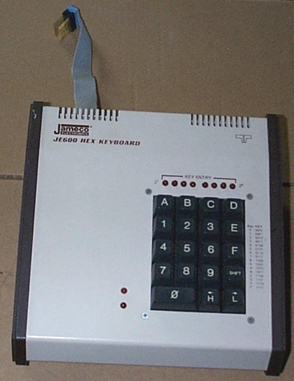

За кого е лекцията?
- Програмисти на езици, които се компилират до native binary
- ... и, на които може да се случи да правят микрооптимизации
- Слабо засяга JVM и .NET програмистите
- Извинявам се на останалите 95% от залата
Какво е лекцията?
- Какво е асемблерен език
- Защо не е страшен
- Малко примери
- По-скоро окуражаване от обучение
Няколко думи за мен
- Борислав aka Боби aka iboB
- Предимно С++ програмист
- Предимно програмист на игри
- Занимавам се с open source
- Gib ☆ to DynaMix
- Работя в Chobolabs
Малко фундаменти
- Executable и binary
- Assembly и assembler (и асемблерен език)
- Българският език е зле
- Булгар-булгар - всичко е асемблер!
- ...освен, когато е асембли
- Ще говоря, както си искам!
- Компилатори
- Disassembly и disassembler
Пещерният човек програмира бинари

... с такава клавиатура

... но реалистично с такава
Викторианският джентъплмен пише на (парен) асемблер
Съвременният програмист ползва компилатор
За хората на бъдещето, няма да говорим
Четене на асемблер
- Реално... четене на дисасембли
- But... why?
- Микроптимизациии
- Хаксори и краксори
- Компилаторите са идеални асемблер-програмисти
- Хитри като стадо гладни лисици
- чисти като момина сълза
Писане на асемблер
- Коренно различно от четенето
- Почти като писане на С
- Никога няма да пишете на асемблер
- Недейте да пишете на асемблер
- Компилаторът е (почти) винаги по-умен от нас
...и най-сетне...
Първи стъпки в четенето на assembly
Какво е асемблер?
- Инструкции към процесора
- А какво е процесорът?
- Пътечки по транзистори, които джуркат регѝстри
- Видове процесори
- Instruction set: CISC, RISC
- Arch: x86, x86_64, ARM, PowerPC
- Arch: i486, Haswell, ARMv7/NEON, ARM64
- Нещата са горе-долу еднакви
Какво е асемблер? 2.0
- Поредица от инструкции към процесора на... хмм... човешки(?) език
ret ; коментар
call func
jmp done
mov rax, 0
imul esi, edi, 25
done:
nop
mov 0, %rax
$34 leal -6(,%eax) # този ред е (почти) шега
Асемблер е лесен
(с x86 memory references)
mov eax, DWORD PTR [r14]
add rax, rdi
add eax, DWORD PTR [r14+4]
sub eax, DWORD PTR [r14+4*rbx]
lea rax, [r14+4*rbx]
xor edx, edx
// int* r14
int eax = *r14;
rax += rdi;
eax += r14[1];
eax -= r14[rbx];
int* rax = r14 + rbx;
edx = 0;
Малко дрън-дрън за BYTE, WORD, DWORD, QWORD
Регистри
- Тайни регистри:
ip, flags, NSA-spy
- x86_64: a, b, c, d, si, di, bp, sp, r8-r15, xmm0-15
- 8-бита
reg-h/l: ah, bl, bpl, r13b (hurr-durr)
- 16-бита
reg-x: ax, bx, spx, r14w
- 32-бита
e-reg-x: eax, ebx, esix, r9d
- 64-бита
r-reg-x: rax, rbx, rbpx, r10
- r8-r15-
bwd
- xmm0-xmm15 - SIMD
- arm:
r0-r15 (sp, lr, pc), s0-s31/d0-d31/q0-q15
- arm64:
x0-x30, w0-w30 - 32-бита (и други маймунджилъци), v0-v16 - SIMD
Къде го този асемблер?
- За краксори
- За прости програмисти
cl /Fag++ -S -masm=intel
Compiler disassembly 101
- Избирате си компилатор
- Компилационни настройки (не забравяйте -O2)
- Изшляпвате код
- Внимавате за нежелани оптимизации
- Константи
- Дефинирани placeholder функции
- C++ Темплейти
- Мarvel as you ascend into your planar form.
Смисълът на информацията
- Гледате и разсъждавате
- Компилаторът е животно! Не го подценявайте
- Процесорът е още по-голямо животно! ↓
- Винаги бенчмарквайте!
- Принципно добри неща:
- По-малко conditions
- По-малко jumps
- По-малко заявки към паметта
- По-малко инструкции
CPU Pipeline

Мизерии и страхотии
push/pop - слагаме неща на стека- Calling конвенции - как се викат функциите
extern "C"stdcallfastcall
- Shadow memory - странни скокове из стека
- Scratch and non-scratch registers - нещо се push-ва, друго – не